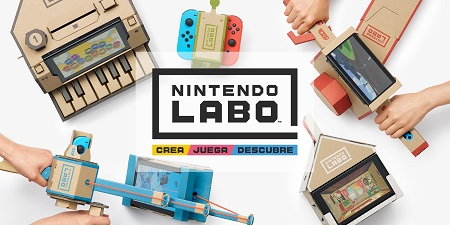
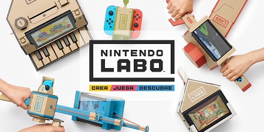
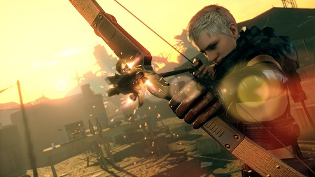
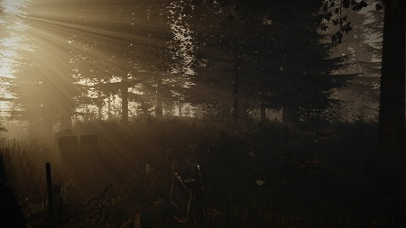
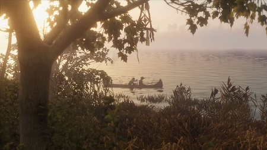
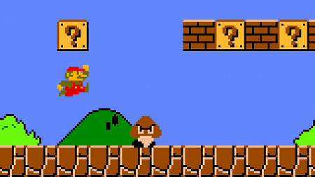

¿Valdrá la pena Nintendo Labo?

No cabe duda que Nintendo es una empresa que a veces acierta y a veces no, sin embargo, lo...Leer más


Sí, tal como el famoso y veloz personaje del erizo azul creado por SEGA.

Este aspecto fue fundamental para la experiencia de juego que fue muy polémica a mediados de los 90's

Se llamaría: Prince id Persia Assasin’s. Al final Ubisoft decidió que fuera un juego totalmente nuevo..

Dicho lugar fue abandonado por un incendio de una mina carbón que ocurrió en 1962. Actualmente sólo habitan 7 personas el lugar y por eso se
le conoce como pueblo fantasma.

¿Y tú qué nombre de un personaje le pondría a tu hijo o hija?

No cabe duda que Nintendo es una empresa que a veces acierta y a veces no, sin embargo, lo...Leer más

Nadie puede decir que la franquicia de Metal Gear Solid no es una de las más representativas del medio...Leer más

No nos hagan mucho caso, pero el survival horror es quizás uno de los géneros dentro de la industria...Leer más

La condición del medio como negocio es difícil, porque por más que nos vayamos por una corriente estrictamente comercial...
Leer más

Ahh, la nostalgia, o lo que es igual, el amor por el pasado. Añorar aquellos gustos que cuando más...Leer más